01
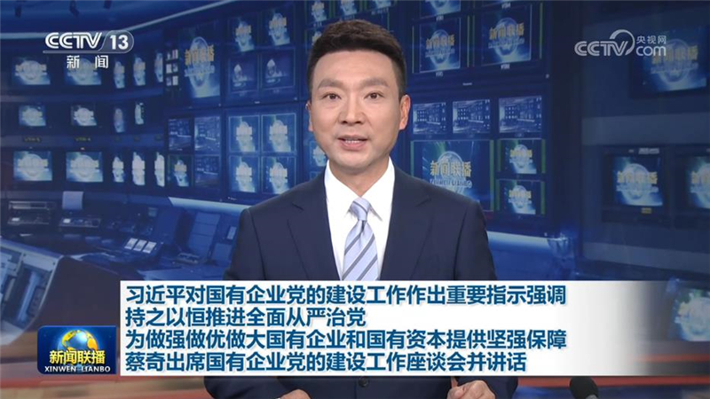
习近平对国有企业党的建设工作作出重要指示强调 持之以恒推进全面从严治党 为做强做优做大国有企业和国有资本提供坚强保障 蔡奇出席国有企业党的建设工作座谈会并讲话
习近平对国有企业党的建设工作作出重要指示强调持之以恒推进全面从严治党
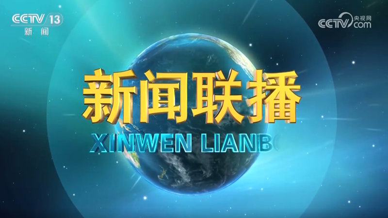

习近平对国有企业党的建设工作作出重要指示强调持之以恒推进全面从严治党
本台今天（11月13日）播发央视快评《为做强做优做大国有企业和国有资本提供坚强保障》。
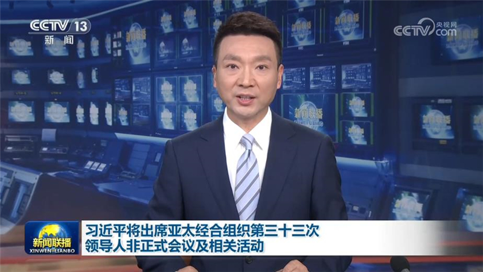
亚太经合组织第三十三次领导人非正式会议将于11月18日至19日在深圳举行，会议主题为“建设亚太共同体，促进共同繁荣”。国家主席习近平将主持会议并发表讲话。
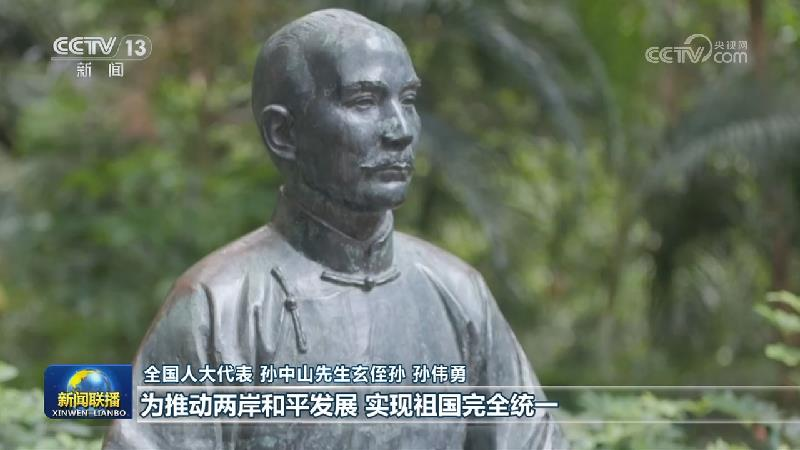
习近平总书记在纪念孙中山先生诞辰160周年大会上发表重要讲话强调，100多年来，孙中山先生“振兴中华”的口号鼓舞了一代又一代中国人，不断被赋予新的时代意义和内涵。今天，我们对孙中山先生最好的纪念，就是学习、继承、发扬他的宝贵精神，把强国建设、民族复兴伟业不断推向前进。总书记的重要讲话在海内外引发热烈反响，大家表示要不断厚植爱国情怀、砥砺强国之志，共同把伟大祖国建设得更加美好。
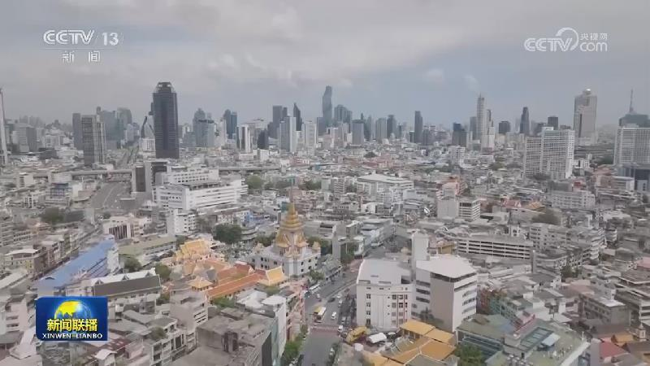
11月13日上午，应泰国总理阿努廷邀请，国务院总理李强乘包机离开北京，对泰国进行正式访问。
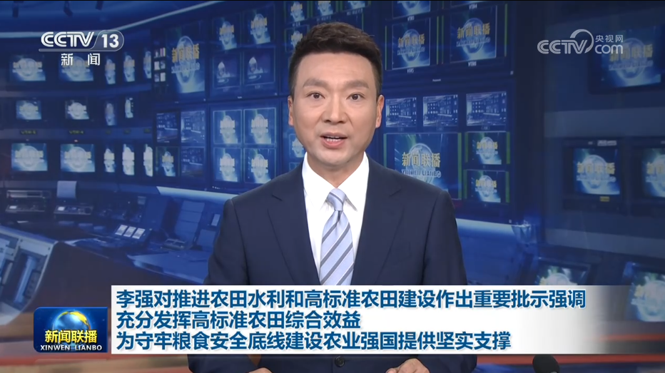
11月13日，国务院召开全国冬春农田水利暨高标准农田建设视频会议。中共中央政治局常委、国务院总理李强日前对推进农田水利和高标准农田建设作出重要批示。批示指出：农田水利和高标准农田建设是夯实国家粮食安全根基的重要抓手。近年来，各地区各有关部门持续加强农田建设，为巩固提升粮食综合生产能力、增强农业防灾减灾能力发挥了关键作用。……
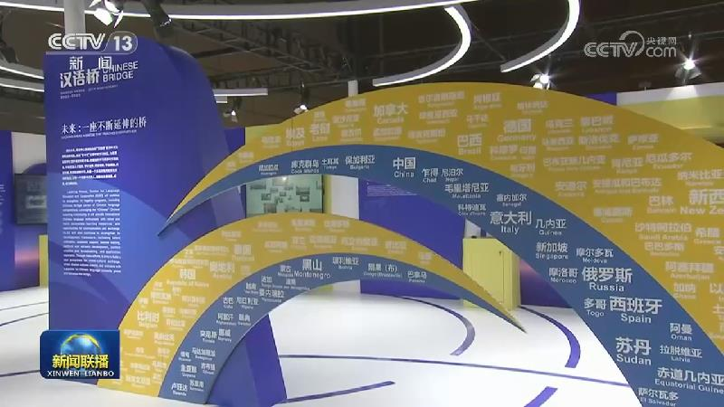
11月13日，国家副主席韩正在北京出席2026世界中文大会开幕式并致辞。韩正指出，习近平主席高度重视国际中文教育，多次复信海外中文学习者，勉励大家做促进中外友好的使者，为增进中外理解互信、民心相通作出贡献。作为中文母语国，中国始终秉持开放包容、互学互鉴、合作共赢的理念，积极推进国际中文教育合作。
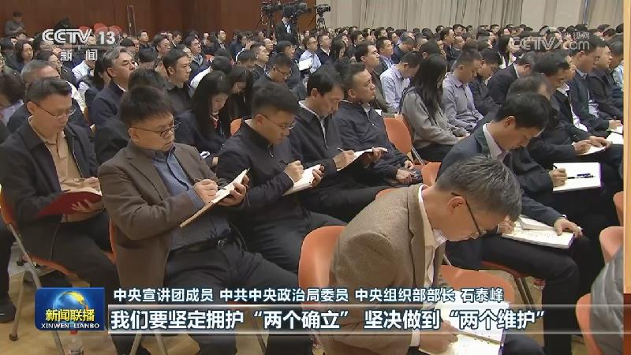
连日来，学习贯彻党的二十届五中全会精神中央宣讲团成员在各地各部门宣讲，并深入基层，与干部群众互动交流。
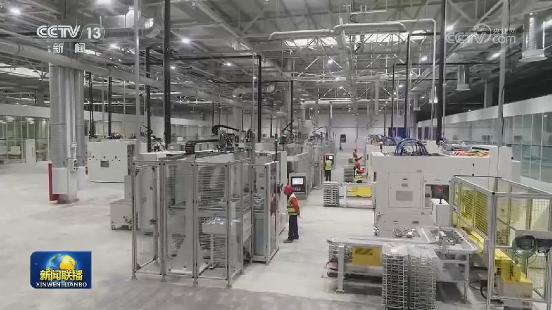
中国人民银行今天（11月13日）公布的数据显示，10月末，广义货币（M2）余额359.06万亿元，同比增长7.1%；社会融资规模存量469.16万亿元，同比增长7.2%。1—10月，社会融资规模增量为28.61万亿元。我国金融总量合理增长，为经济持续向新向优向好发展创造适宜的货币金融环境。
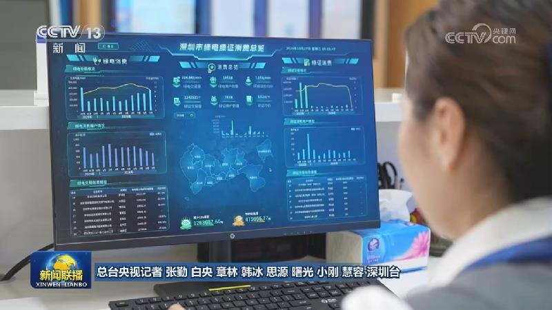
随着APEC领导人会议周临近，深圳从枢纽通关、城市运行到志愿服务，全方位、精细化推进各项保障工作，以开放、专业、自信的姿态，迎接亚太宾朋。
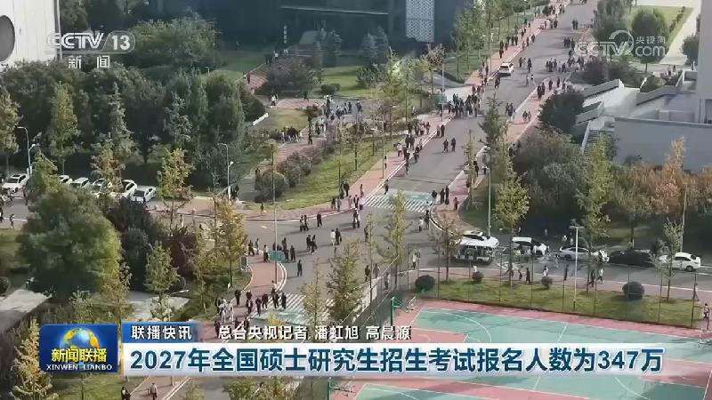
1-10月粤港澳大湾区内地9市对APEC其他经济体进出口增长近三成
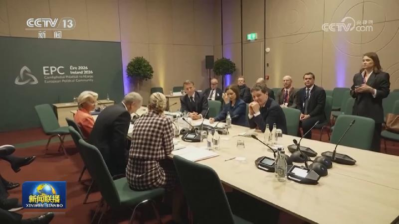
俄罗斯总统普京12日在莫斯科会见了美国总统特使威特科夫等参加了俄美乌三方谈判的美方代表。普京说，对俄方来说，任何外国军队在乌克兰驻扎都绝对不可接受，乌境内的外国军队将成为俄合法打击目标。普京还表示，俄方从不反对与欧洲对话，是欧洲中断了与俄罗斯的对话。
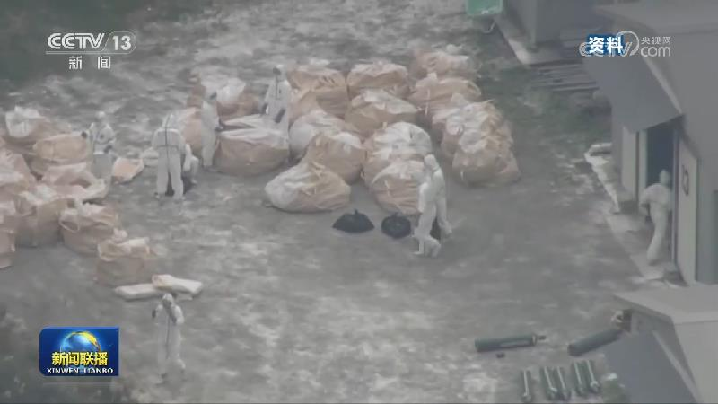
美称无需与伊达成协议 伊称摧毁美雷达